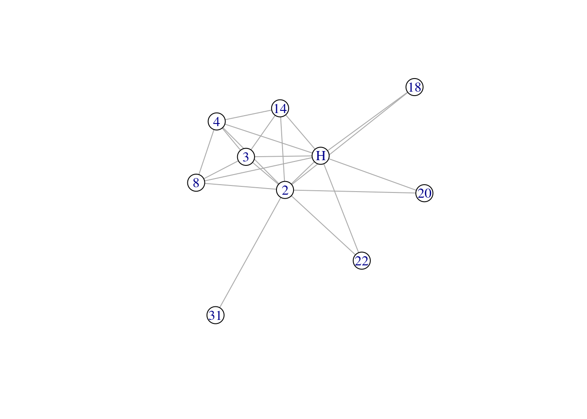
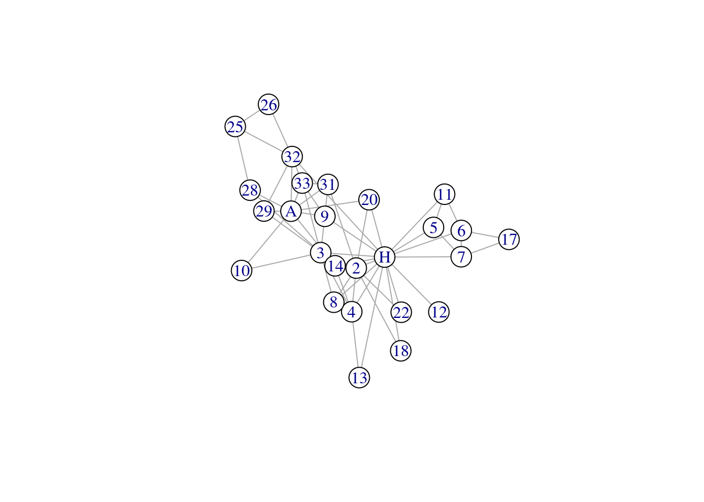
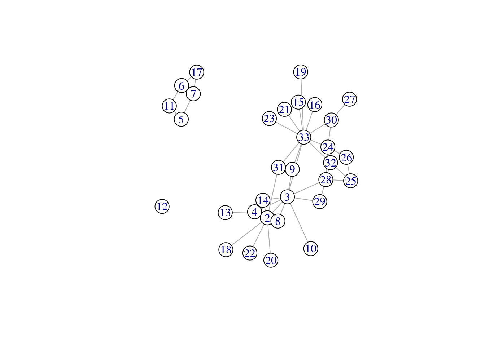
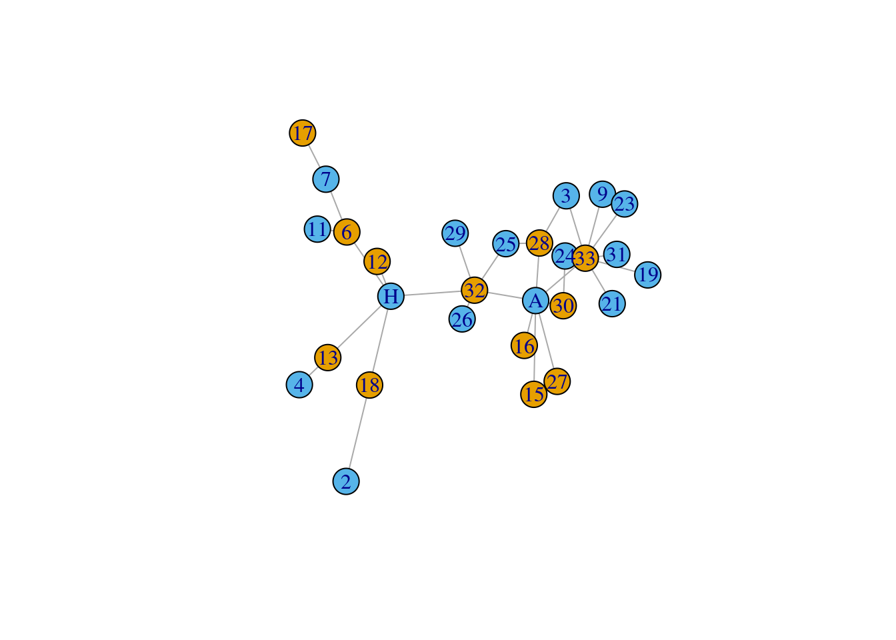

Chapter 5 Chapter 5: Manipulating network objects
In this chapter we explore how network objects can be “manipulated” based on their node or edge attributes. This can be especially useful if you wish to segment or subset your network so that you can analyze networks of different types. For instance, you may wish to explore how your network analysis results change depending on the threshold used to remove edges of varying weights (edge attribute). Another example could be that you are only interested in analyzing language networks where the nodes represent nouns, and not other parts of speech like verbs or adjectives (node attribute). We will also learn how to add these node and edge attributes to the network.
5.1 Set up
We will use the karate network as our example in this chapter.
## ── Attaching core tidyverse packages ──────────────────────────────────────────────────────────────────────────────────────────────────────────────────────────────────────────────────────────────────── tidyverse 2.0.0 ──
## ✔ dplyr 1.1.4 ✔ readr 2.1.5
## ✔ forcats 1.0.0 ✔ stringr 1.5.1
## ✔ ggplot2 3.5.1 ✔ tibble 3.2.1
## ✔ lubridate 1.9.3 ✔ tidyr 1.3.1
## ✔ purrr 1.0.2
## ── Conflicts ────────────────────────────────────────────────────────────────────────────────────────────────────────────────────────────────────────────────────────────────────────────────────── tidyverse_conflicts() ──
## ✖ lubridate::%--%() masks igraph::%--%()
## ✖ dplyr::as_data_frame() masks tibble::as_data_frame(), igraph::as_data_frame()
## ✖ purrr::compose() masks igraph::compose()
## ✖ tidyr::crossing() masks igraph::crossing()
## ✖ dplyr::filter() masks stats::filter()
## ✖ dplyr::lag() masks stats::lag()
## ✖ purrr::simplify() masks igraph::simplify()
## ℹ Use the conflicted package (<http://conflicted.r-lib.org/>) to force all conflicts to become errors## This graph was created by an old(er) igraph version.
## Call upgrade_graph() on it to use with the current igraph version
## For now we convert it on the fly...## IGRAPH 4b458a1 UNW- 34 78 -- Zachary's karate club network
## + attr: name (g/c), Citation (g/c), Author (g/c), Faction (v/n), name (v/c), label (v/c), color (v/n), weight (e/n)5.2 Adding node attributes
An important feature of psychological networks is that we are usually interested in more than just the underlying mathematics of the network, but rather we want to know how these network measures relate to behavior. This implies that the nodes in psychological networks are typically associated with rich psychological variables. For instance, nodes depicting individuals of different ages and genders, or nodes depicting words with different values on lexical-semantic variables like valence and arousal.
We need to add this node information as node attributes to the network representation.
In the code below, we output the list of nodes so that we can merge this data frame to the node attributes (can be done external to RStudio or internally within RStudio using data wrangling methods). This is because node attributes are additional variables that you have knowledge of or have collected in your study.
# export your node names, enter attributes manually outside of R
write.csv(data.frame(node = V(karate)$name), file = 'karate_nodes.csv', row.names = F)In the karate_node_added.csv file, sample node attributes for the karate network have been added. The code below shows you how to read in this data and add this information as node attributes to the network using the set_vertex_attribute function.
# import your node attributes
node_info <- read.csv('data/karate_nodes_added.csv', header = T)
# very important to ensure that node order is identical
node_info <- node_info %>% arrange(factor(node, levels = V(karate)$name))
identical(V(karate)$name, node_info$node) # sanity check that the node name order is identical## [1] TRUE# add the 'gender' attribute
karate <- set_vertex_attr(karate,
name = 'gender',
value = node_info$gender)
# add the 'belt' attribute
karate <- set_vertex_attr(karate,
name = 'belt',
value = node_info$belt)
# add the 'age' attribute
karate <- set_vertex_attr(karate,
name = 'age',
value = node_info$age)
summary(karate) # these vertex attributes should show up in the summary## IGRAPH 4b458a1 UNW- 34 78 -- Zachary's karate club network
## + attr: name (g/c), Citation (g/c), Author (g/c), Faction (v/n), name (v/c), label (v/c), color (v/n), gender (v/c), belt (v/c), age (v/n), weight (e/n)A key point is to ensure that the node ordering in your .csv file is identical to that of the network - this can be assured using the arrange function from tidyverse. This is to ensure accurate mapping from your data frame to the network.
When you run summary(karate) hopefully you will see that there are additional labels (gender, belt, age) included in the attributes section.
5.3 Adding edge attributes
Because there are usually more edges than nodes in the network, we usually do not manually insert edge attributes by hand (although it is possible!). In Chapter 4 recall that edge weights are usually included in the network at the point of network construction, as edge weights are in an additional column in the edge list that you are importing into RStudio.
Here we explore a simple case where you want to “tag” and color edges differently depending on whether the tie is between same or different genders.
# initialize all edges with the same label
E(karate)$edge_type <- 'same'
# re-assign those with mixed edges to a new label
E(karate)$edge_type[E(karate)[V(karate)[V(karate)$gender == 'male'] %--% V(karate)[V(karate)$gender == 'female']]] <- 'different'
summary(karate) # there should be a new edge type ## IGRAPH 4b458a1 UNW- 34 78 -- Zachary's karate club network
## + attr: name (g/c), Citation (g/c), Author (g/c), Faction (v/n), name (v/c), label (v/c), color (v/n), gender (v/c), belt (v/c), age (v/n), weight (e/n), edge_type (e/c)## [1] "same" "same" "same" "same" "different" "same" "same" "same" "same" "different" "different" "same" "different" "same" "same" "different" "same" "same"
## [19] "same" "same" "different" "same" "same" "same" "same" "same" "same" "same" "same" "different" "same" "different" "same" "different" "same" "same"
## [37] "same" "different" "different" "same" "different" "same" "different" "same" "same" "same" "same" "different" "same" "different" "different" "same" "same" "different"
## [55] "same" "different" "same" "same" "different" "different" "different" "same" "same" "different" "different" "different" "same" "different" "different" "different" "same" "same"
## [73] "different" "different" "same" "same" "different" "different"# this tells you the ordering of the levels so you can tell that red = different and blue = same
factor(E(karate)$edge_type) |> levels()## [1] "different" "same"We can then easily visualize the different edge types in the network.
5.4 Subsetting the network
5.4.1 Subset by node attributes
The example below subsets the karate networks to only retain male individuals.
karate_male <- induced_subgraph(graph = karate,
vids = V(karate)$gender == 'female')
summary(karate_male)## IGRAPH 065320d UNW- 12 6 -- Zachary's karate club network
## + attr: name (g/c), Citation (g/c), Author (g/c), Faction (v/n), name (v/c), label (v/c), color (v/n), gender (v/c), belt (v/c), age (v/n), weight (e/n), edge_type (e/c)How would you change the code to retain female individuals?
5.4.2 Subset by a target node
The example below shows you how to extract the immediate neighborhood structure of a particular node (the ego).
mrhi <- make_ego_graph(karate, order = 1, nodes = 'Actor 2')[[1]] # order = 1 (immediate neighbors)
summary(mrhi)## IGRAPH 4b39ab3 UNW- 10 21 -- Zachary's karate club network
## + attr: name (g/c), Citation (g/c), Author (g/c), Faction (v/n), name (v/c), label (v/c), color (v/n), gender (v/c), belt (v/c), age (v/n), weight (e/n), edge_type (e/c)
We can also extract the ego’s 2-hop neighborhood - this includes their immediate connections, and the connections of the connections. This can be easily done by changing the order argument.
mrhi2 <- make_ego_graph(karate, order = 2, nodes = 'Mr Hi')[[1]] # order = 2 (immediate + neighbors of neighbors)
summary(mrhi2)## IGRAPH dad3179 UNW- 26 59 -- Zachary's karate club network
## + attr: name (g/c), Citation (g/c), Author (g/c), Faction (v/n), name (v/c), label (v/c), color (v/n), gender (v/c), belt (v/c), age (v/n), weight (e/n), edge_type (e/c)
5.4.3 Subset by edge attributes
We can also subset a network by their edge attributes. Below shows an example where we only want to retain edges that between males and females (i.e., different genders).
The eids argument looks a bit crazy, but what it is doing to subset from all of the edges in the original network, the set of edges that connect nodes that are female and male. %--% is a special igraph operator that looks for the edges that join two sets of specified vertices (here we are using the square operator to select nodes of various attributes). Think about what aspect of this argument you would be modify in order to retain the edges between females only.
# retain edges of the network where the connection is between a male and a female (i.e., mixed edges)
mixed_network <- subgraph.edges(graph = karate,
eids = E(karate)[V(karate)[V(karate)$gender == 'female'] %--% V(karate)[V(karate)$gender == 'male']]
)
# eids = E(network)$weight > 4
plot(mixed_network, vertex.color = factor(V(mixed_network)$gender)) 
If you have a weighted graph, it is also possible to subset the network based on edge weights. The code below retains edges that have a weight greater than 4. Play around with this argument and see if you can subset the network based on different weight thresholds. For instance, if you are interested in studying acquaintance relations, then you may decide to retain weak edges, but if you are interested in studying close relations, then you may decide to retain the strongest edges.
example_network <- subgraph.edges(graph = karate,
eids = E(karate)[E(karate)$weight > 4]
)
plot(example_network)
5.4.4 Subsetting by mutual edges
This section is most applicable for directed networks, as you may wish to subset a network based on whether edges are mutual (1–>2 AND 2–>1) or asymmetrical (1–>2 but there is no connection from 2 to 1).
To illustrate this, we first have to convert our karate network into a directed graph.
karate_d1 <- as.directed(karate, mode = 'random') # convert undirected edges into directed edges
karate_d2 <- as.directed(karate, mode = 'mutual') # convert undirected edges into mutual, directed edges
summary(karate_d1)## IGRAPH 50be698 DNW- 34 78 -- Zachary's karate club network
## + attr: name (g/c), Citation (g/c), Author (g/c), Faction (v/n), name (v/c), label (v/c), color (v/n), gender (v/c), belt (v/c), age (v/n), weight (e/n), edge_type (e/c)## IGRAPH d8d798a DNW- 34 156 -- Zachary's karate club network
## + attr: name (g/c), Citation (g/c), Author (g/c), Faction (v/n), name (v/c), label (v/c), color (v/n), gender (v/c), belt (v/c), age (v/n), weight (e/n), edge_type (e/c)Notice from the summary output that karate_d2 has twice the number of edges than karate_d1. This is because each undirected edge has been converted into two directed edges (mutual) connecting the node pair in both directions.
We can use the function which_mutual to detect mutual directed edges in the network and use this to subset the network accordingly. Notice that to select for the non-mutual edges, we can use the ! or NOT operator.
# retain mutual edges
subgraph.edges(karate_d1, eids = E(karate_d1)[which_mutual(karate_d1)], delete.vertices = TRUE) |>
summary() # empty graph## IGRAPH e935a38 DNW- 0 0 -- Zachary's karate club network
## + attr: name (g/c), Citation (g/c), Author (g/c), Faction (v/n), name (v/c), label (v/c), color (v/n), gender (v/c), belt (v/c), age (v/n), weight (e/n), edge_type (e/c)subgraph.edges(karate_d2, eids = E(karate_d2)[which_mutual(karate_d2)], delete.vertices = TRUE) |>
summary()## IGRAPH e6bba4f DNW- 34 156 -- Zachary's karate club network
## + attr: name (g/c), Citation (g/c), Author (g/c), Faction (v/n), name (v/c), label (v/c), color (v/n), gender (v/c), belt (v/c), age (v/n), weight (e/n), edge_type (e/c)# retain non-mutual edges
subgraph.edges(karate_d1, eids = E(karate_d1)[!which_mutual(karate_d1)], delete.vertices = TRUE) |>
summary()## IGRAPH ff6045b DNW- 34 78 -- Zachary's karate club network
## + attr: name (g/c), Citation (g/c), Author (g/c), Faction (v/n), name (v/c), label (v/c), color (v/n), gender (v/c), belt (v/c), age (v/n), weight (e/n), edge_type (e/c)subgraph.edges(karate_d2, eids = E(karate_d2)[!which_mutual(karate_d2)], delete.vertices = TRUE) |>
summary() # empty graph## IGRAPH 5764414 DNW- 0 0 -- Zachary's karate club network
## + attr: name (g/c), Citation (g/c), Author (g/c), Faction (v/n), name (v/c), label (v/c), color (v/n), gender (v/c), belt (v/c), age (v/n), weight (e/n), edge_type (e/c)Notice from the summary output that you get different results depending on the way that the directed graph is constructed. In these toy examples, the directed edges in the network were either ALL mutual edges or ALL non-mutual edges. If you have a network with varying proportions of mutual and non-mutual edges these functions can be useful for assessing the overall mutuality of the directed graph.